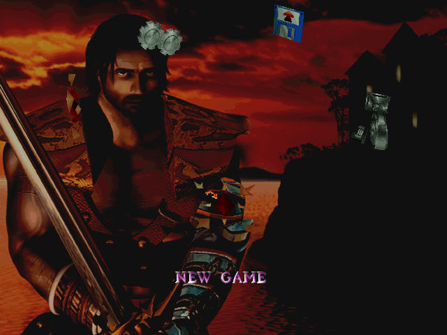
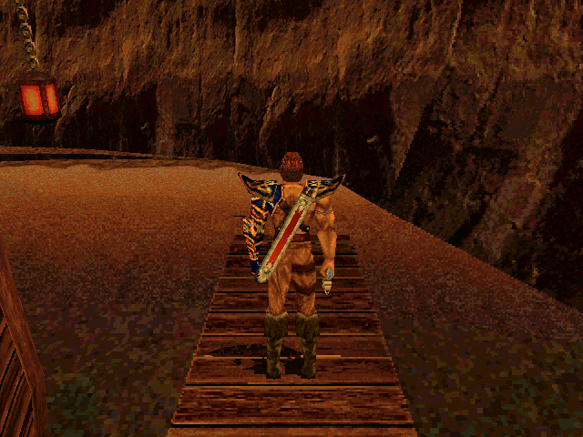

名稱：屠龍大會／阿斯甘：屠龍者 (Asghan: The Dragon Slayer，英文版) 簡介：Silmarils 1998年出品的動作冒險遊戲，台灣由第三波代理進口，但並未中文化 [待補]。

保護：光碟 限制：只能在Win9x系統上安裝或更改設定，但執行沒有限制（直接執行_start.exe）。 備註：非安裝移機者，需修改_start.cdp中光碟所在位置。 操作： 移動滑鼠 = 調整視角 上下 = 跑步 左右 = 轉身 Shift+上下 = 步行 PgDn = 180度轉身 Ctrl+上 = 直劈 Ctrl+左右 = 揮砍 Ctrl+下 = 防禦 Q／滑鼠右鍵 = 弓箭射擊模式 Alt = 跳躍 Alt+上 = 往前跳躍 Alt+Space = 向上抓取／攀爬 Space = 動作（撿拾／交談等） I = 投石 M = 選擇使用魔法 F1～F8 = 使用魔法 H = 選擇使用治療藥水 B = 顯示狀態 Tab = 顯示功能項 S = 存檔 L = 讀檔 P = 暫停